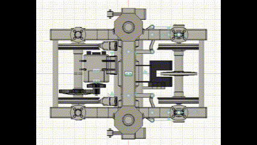

ギャラリー
リンクをクリックすると3Dデータを閲覧できます。
鉄石電気鉄道1000形電車
最終更新2020/02/04
FUSION360を始めてから3カ月くらい経った頃の作品。 当時はFUSION360を3DCADではなく3DCGとして用いていたから、この作品は(データ上は)実物大だ。 いつかBlenderでリメイクしたい。
鉄石電気鉄道2000型電車
最終更新2022/07/28
せっかく3Dプリンタを使うならば曲面を取り入れてみたいと思って作った作品だ。 独特な座席配置のせいで戸袋の大きさが揃っていない。

操舵台車
最終更新2022/10/29
実際に3Dプリンタで作ってみると、部品数が多く、部品は小さく、組み立ては困難であった。 仮に問題なく作れたとしても、操舵角がわずかに異なる台車をいくつも作って走行実験し、最適な操舵角を求めなくてはならなかったに違いない。 そもそも、非操舵台車の走りを確かめるのが先だろう。
東京メトロの操舵台車の機構をロール軸まわりに90度回転させたようなものだ。
シングルアームパンタグラフ
最終更新2023/05/04
下枠(赤色の部品)の角度に関係なく、黄色い部品は垂直に、かつ回転せずに移動する。 機構学ってすごいな。 もっと難しいのは、シングルアームパンタグラフを1/45サイズで作ることだ。 一度挑戦したが、工作精度が悪くて上枠が傾いてしまった。 次は このサイト を参考にして作ってみようかな。
鉄石電気鉄道3000型電車
最終更新2024/06/05
スタイリングの意図
鉄石電気鉄道は路線数は多いが各々の路線は短い。 そのため、決まった色の車両ではごく限られた範囲しか走れず、採算が合わない。 一方、ラインカラーを持たず全ての路線を走行する車両を作ると、誤乗が頻発する。 そこで、現在走行している路線に応じて色が変わる電車があったら面白そうだと思った。 ラインカラーの発光が映えるように車体を黒くしてみたら、思いのほか気に入った。 鉄石はかつて第二次産業で栄えたのだから、蒸気機関車をモチーフとしたことにすれば黒い車体に説得力がつくだろう。 蒸気機関車から「かつての鉄石の力強さを思い起こさせる車両」、発光器から「鉄石の未来を明るく照らす車両」というコンセプトを思いついた。 つまるところ、コンセプトは完全に後付けだ。